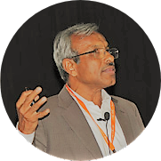
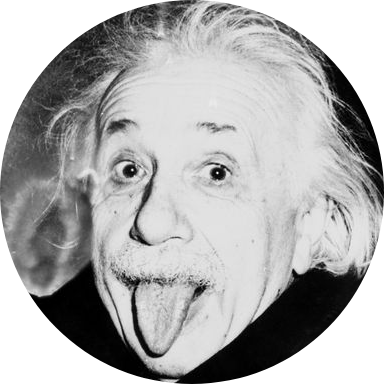
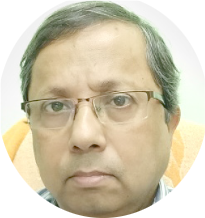

Particle physics and early universe (Bengali)
Prof. Naba K Mondal
Tuesday, 3rd December 2019 at 10.00 AM | Vigyan Samagam, Science City, Kolkata

Prof. N. K Mondal, Raja Ramanna fellow, Saha Institute of Nuclear Physics
Content not received!
The invisible universe
Prof. Pijushpani Bhattacharjee
Tuesday, 3rd December 2019 at 11.30 AM | Vigyan Samagam, Science City, Kolkata

Prof. Pijushpani Bhattacharjee, Saha Institute of Nuclear Physics
Content not received!
Needles in haystack: How do the physicists go after finding them?
Prof. Satyajit Saha
Wednesday, 4th December 2019 at 10.00 AM | Vigyan Samagam, Science City, Kolkata

Prof. Satyajit Saha was involved in establishing the Jaduguda Underground Science Laboratory
(JUSL), at the Jaduguda mines in Jharkhand. Currently, he is working on several experiments at JUSL
which involve background estimation, prototype experiments on dark matter and other rare event searches. Earlier in his research career, he has worked on
experiments relating to fundamental symmetry violation, nuclear spectroscopy and reactions of
fundamental physics interest, inner shell ionization phenomena in heavy elements, etc. He has wide
experience in radiation detector development and related instrumentation intended for
experiments in nuclear and high energy physics. He is currently Raja Ramanna fellow at Saha Institute of Nuclear Physics, Kolkata
Rare phenomena, events and processes have always been challenging physicists to question the foundations of physics. Quite often, such intriguing situations can be logically arrived at through physical arguments, large scale observations, theoretical model building, followed by mathematical derivations having different levels of difficulties. These pose challenges to the physicists to prove or disprove them with experimental findings which are often difficult and daunting tasks to accomplish. Many of the Mega Science projects are aimed at such endeavours. A few such examples will be presented in this talk with aim to motivate the young physicists to take up the challenges in future.
The curious story of neutrino and its mass
Prof. Amitava Raychaudhuri
Wednesday, 4th December 2019 at 11.30 AM | Vigyan Samagam, Science City, Kolkata
Prof. Amitava Raychaudhuri, educated at Presidency College, Kolkata and Delhi University, obtained his Ph.D. in particle physics from the University of Maryland, USA. Currently Professor Emeritus at the University of Calcutta, he was earlier the Sir Tarak Nath Palit Professor of Physics. From 2005-2011 he was the Director of the Harish-Chandra Research Institute, Allahabad. He is a recipient of the Shanti Swarup Bhatnagar Award and the International Alumnus of the year 2005 of the University of Maryland. He is a Fellow of the three National Science Academies and has been awarded D.Sc.(h.c) by the University of Gour Banga and the University of North Bengal.
Neutrinos, uncharged weakly-interacting fundamental particles, are of three types and were thought to be massless till recently. They have been found to exhibit the unusual feature of oscillating from one type to another as they travel. The way this was observed in the last few decades in a few clever experiments around the world will be highlighted. We discuss how this is a signal for a non-zero mass of the neutrinos. Then, we briefly touch upon a major experiment – the India-based Neutrino Observatory -- that is being set up in India to address some of the open issues. We end with a discussion of why a non-zero mass of the neutrino has important physics implications.